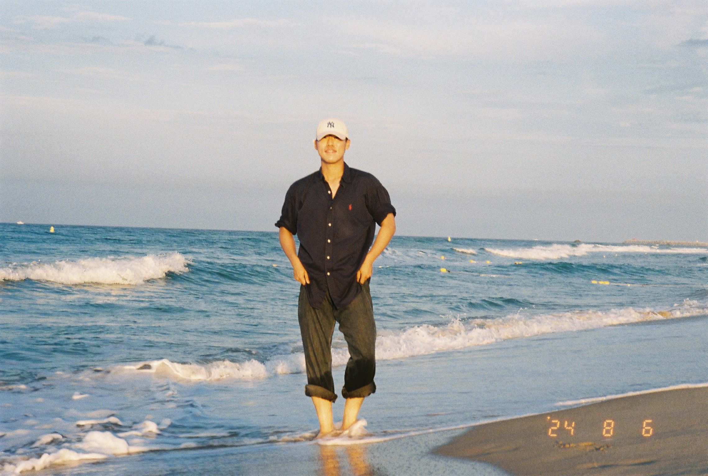
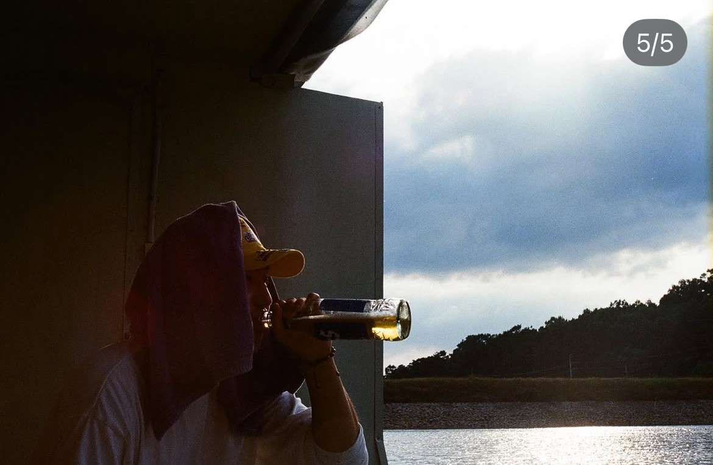

 김수한 느긋한 지인과의 일상과 자연풍경을 담는 낭만 포토그래퍼. 베이스: 서울 주요 테마: 러닝, 자연, 여행 사용 장비: Autoboy #Running #Nature #Traver 포트폴리오 보러가기 →
 김종윤 음악과 낭만을 사랑하는 포토그래퍼 베이스: 미국 주요 테마: 일상, 공연, 여행 사용 장비: Olympus mju-II · Kodak Gold 200 #Lifestyle #Challenge #free 포트폴리오 보러가기 →
Guest Artist 03 소개 아직 미정 누구든지 환영합니다. 베이스: 홍콩 주요 테마: 여행, 거리 스냅, 네온 사용 장비: Leica Minilux · Cinestill 800T #네온사인 #비오는거리 #홍콩야경 포트폴리오 보러가기 →